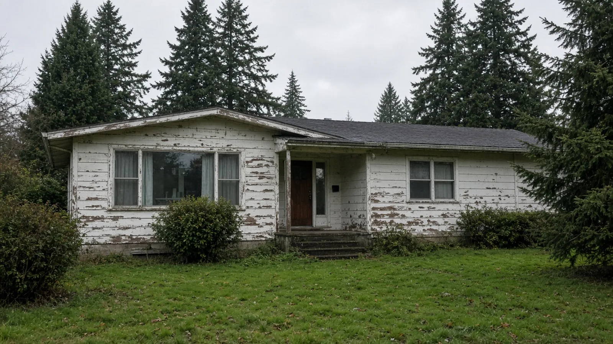
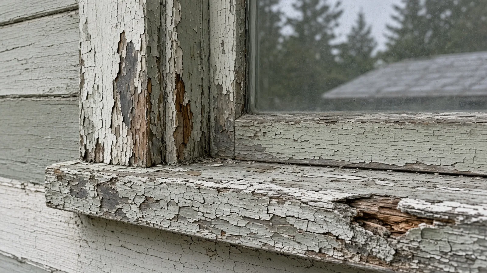
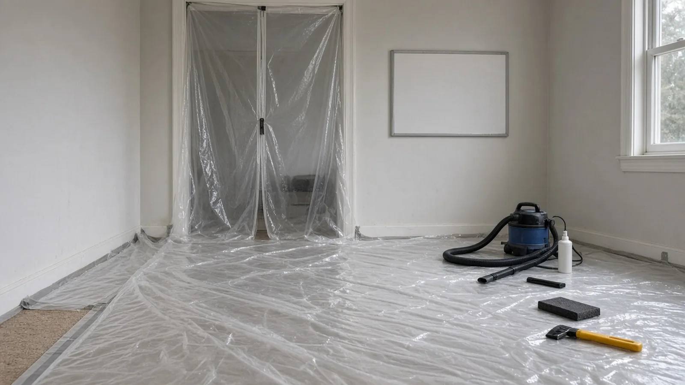
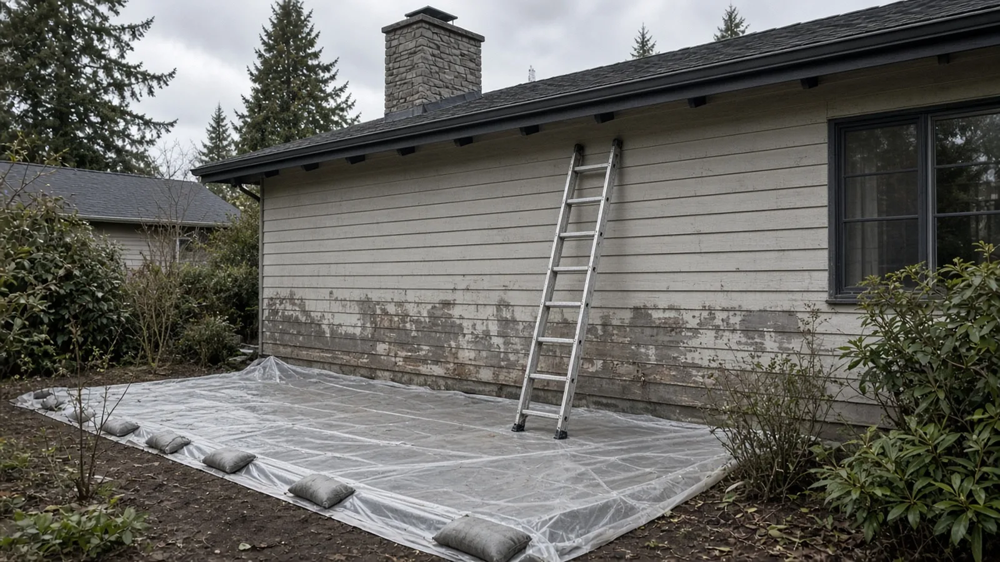
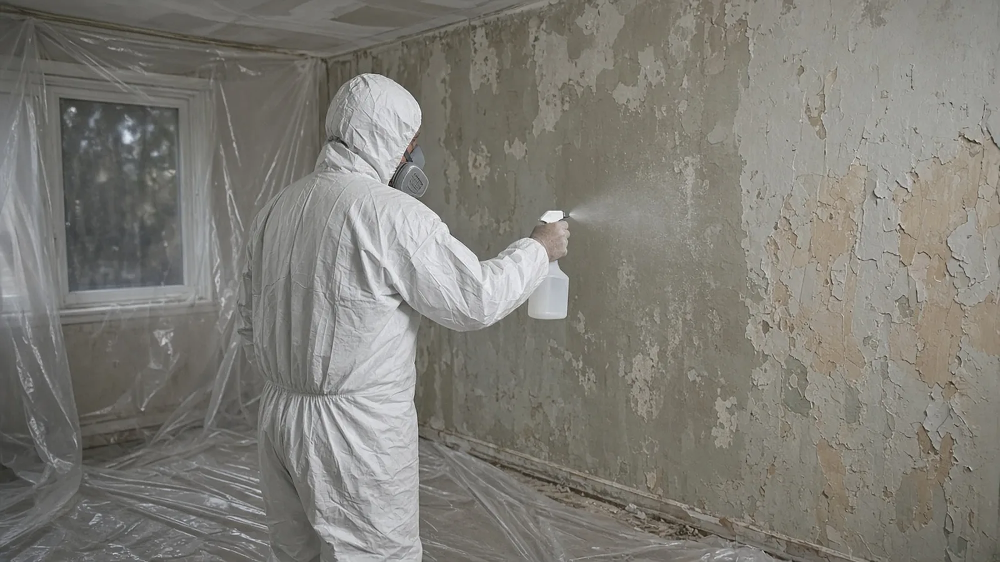
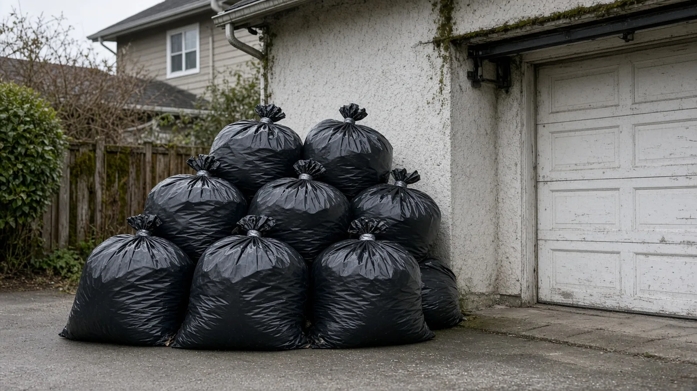
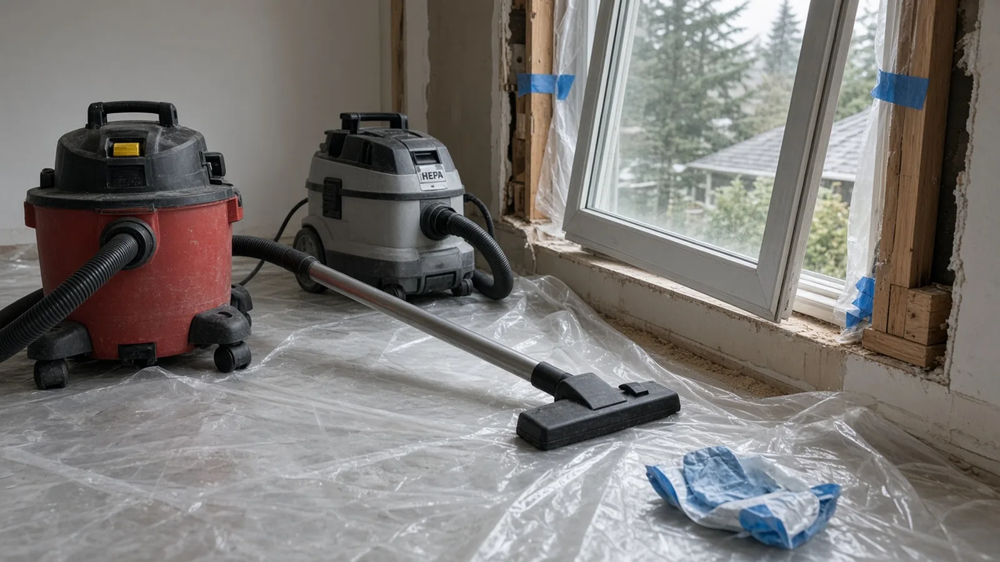
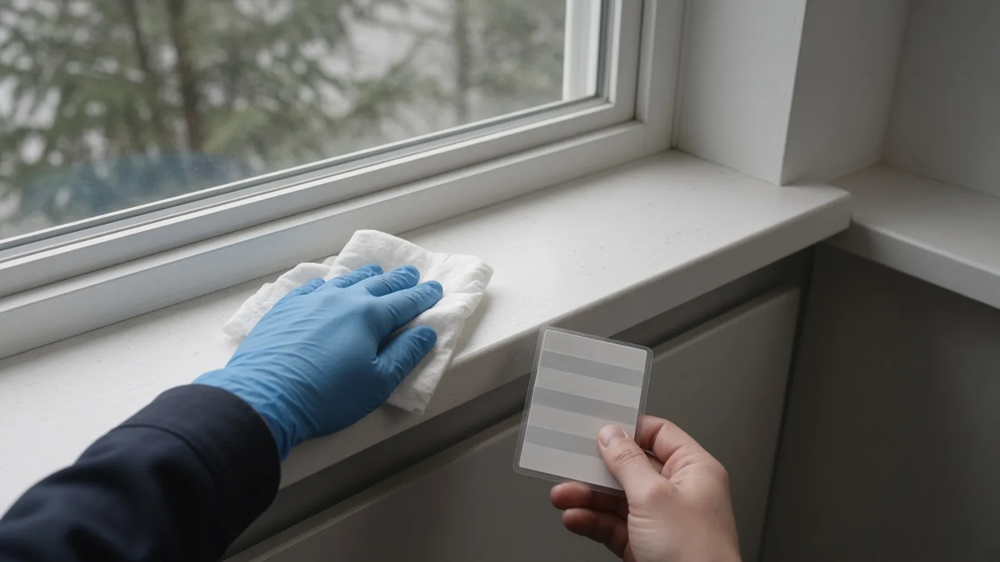
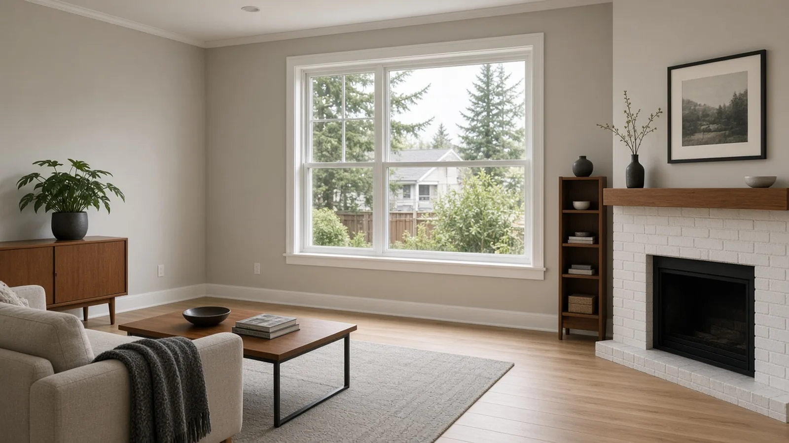

Lead-Safe Remodeling Burien WA — Pre-1978 Homes, RRP Certified Firms, Permits and Cleanup Verification
By Board of Project Stewardship Editorial
Key Takeaways
- The rule follows the house's age, not the size of the bill. Washington's Department of Commerce says a firm needs Renovation, Repair and Painting (RRP) certification to offer, bid or perform renovation, repair or painting work on homes and child-occupied facilities built before 1978. That covers remodels, painting, restoration and any work that disturbs paint in a pre-1978 property.
- No Burien permit does not mean no lead rules. Burien's Required Permits for Single Family Residences sheet lists painting as work that does not need a building permit. Washington's lead renovation rules in chapter 365-230 WAC still apply when a paid crew disturbs paint in an older home.
- The job isn't done until it passes cleaning verification. Under WAC 365-230-330, a certified renovator inspects the work area and then wipes each windowsill, floor and countertop with a damp disposable cloth and compares the cloth to a cleaning verification card before the warning signs come down.
Why lead-safe remodeling matters in Burien
If your Burien house is an older rambler or wood-sided home that has been repainted over the decades, it may be exactly the kind of housing lead rules were written for. When a remodel cuts into old window trim, scrapes siding, opens a wall or pulls out a painted door frame, it can turn layers of old paint into dust and chips. That dust lands on floors, sills and soil where children play.
Washington's Department of Commerce runs the state's Lead-Based Paint programs, which it says protect public health by providing training, certification and compliance enforcement for lead-safe practices. Washington writes its own rules for renovation work in chapter 365-230 WAC, and Commerce certifies the firms and renovators who do it. The federal side of the same idea is EPA's Renovation, Repair and Painting Program.
This guide sticks to what Commerce, the Washington Administrative Code, EPA, the Washington State Department of Health, the City of Burien and Washington L&I publish. For other Burien guides and local firms, start with the Board of Project Stewardship's Burien directory and the Board's permits overview.
Step one: find out when the house was built
Everything in this guide turns on one date. Washington's RRP rules cover homes and child-occupied facilities built before 1978. Commerce lists residential homes, multi-family homes, single-family homes and child-occupied facilities such as daycares, preschools and elementary schools.
If you don't know your home's year built, look up the parcel on the King County Assessor's eReal Property search, then keep a copy of that record in your project file. Additions and later remodels can complicate the picture. A house built in 1962 with a 1990s addition may still have pre-1978 paint in the original rooms. Ask your contractor to treat the original parts of the house as pre-1978 unless testing shows otherwise.

Who has to be certified, and how to check
Commerce describes two RRP certifications that matter to a homeowner:
- Firm RRP certification. For businesses, property managers and landlords that perform renovation, repair or painting work on pre-1978 homes or child-occupied facilities. Commerce's RRP page says the firm must have an employee or owner with individual RRP certification, that certificate must be valid and not within six months of expiration, and the certified individual must supervise or perform the work. The firm also needs active registrations: a Washington State Department of Revenue account, a Washington State business license, Secretary of State registration if applicable, and an L&I contractor license if applicable.
- Individual renovator certification. A person becomes certified by completing a course through a Washington State-accredited training provider. Commerce's training page describes the renovator class as eight hours, including two hours of hands-on training, required every five years to maintain certification.
If a renovator was trained through EPA or another state, Commerce says they must register that certification with Commerce, and WAC 365-230-380 says the Washington certificate will not run past the expiration date on the original. So an EPA card alone isn't the end of the conversation in Washington. Ask whether it has been registered with Commerce.
Commerce also says its certificates for RRP are valid up to five years, while lead-based paint activities certificates (inspection, risk assessment and abatement) are valid for three years. Questions go to the program at LBPInfo@Commerce.wa.gov or 360-586-5323 (voicemail), per the Lead-Based Paint page.
What to ask a bidder for, in writing:
- A copy of the firm's Washington RRP firm certificate, with the legal name matching the contract.
- The name of the certified renovator assigned to your job and a copy of that person's current certificate.
- The firm's contractor registration, which you can confirm on Washington L&I Verify.
EPA's work practices page says copies of the certified renovator's initial and most recent refresher course completion certificates are records required to be on the job site. You can ask to see them.
RRP is not abatement
People mix these up, and it matters for scope and price. Commerce separates two programs. Lead-Based Paint Activities covers lead inspections, risk assessments, clearance inspections and abatement, which Commerce describes as permanently reducing or eliminating lead-based paint hazards for more than 20 years. RRP covers renovation and repair aimed at improving the property where lead paint may be disturbed. Commerce says plainly that RRP activities are not intended to permanently remove lead hazards.
So a window replacement or kitchen remodel done by an RRP-certified firm is a remodel done safely. It is not a lead abatement. If your goal is to permanently address lead hazards, for example after a child's elevated blood lead result, that is work for certified abatement professionals under the lead-based paint activities rules in chapter 365-230 WAC, and it should be scoped separately.
Lead is also not the only hazard hiding in an older Burien house. Old flooring, ceiling texture and pipe insulation raise asbestos questions that follow their own survey and removal rules. The Board's asbestos survey guide walks through that process; plan both checks before demolition starts.
When the rules may not apply
WAC 365-230-300 says the renovation rules apply to renovations performed for compensation in target housing and child-occupied facilities, and then lists exceptions. The most useful ones for homeowners:
- A certified inspector or risk assessor has made a written determination that the components being renovated are free of paint at or above 1.0 milligram per square centimeter or 0.5 percent lead by weight, and the firm has a copy.
- A certified renovator tested each affected component with an EPA-recognized test kit, following the kit instructions, and found it below those levels.
- A certified renovator collected paint chip samples from each painted component and an EPA-recognized laboratory found them below those levels.
Testing is component by component. If the test says the kitchen window trim is clear, that does not clear the stair railing. Ask for the test results in writing and keep them. The same section treats emergency renovations differently, but even then the cleaning and cleaning verification requirements still apply.
Before work starts: the Renovate Right pamphlet
WAC 365-230-320 says that no more than sixty days before renovation begins in a pre-1978 dwelling unit, the firm must give the owner the pamphlet and either get a written acknowledgment that the owner received it or get a certificate of mailing at least seven days before the work. If the owner does not live there, an adult occupant must also get the pamphlet. That matters for Burien landlords and for anyone renting out a basement unit.
The pamphlet is EPA's Renovate Right, which EPA describes as general information about legal requirements for lead-safe work practices for homeowners, tenants, childcare providers and parents during renovation activities. If a contractor starts a pre-1978 job and you never saw that pamphlet, that's a signal to stop and ask questions.
What Burien permits and what it doesn't
Lead rules and building permits are separate systems. You usually need to think about both.
Burien's Permit Center handles intake, review, tracking and issuing land use, building and construction permits, with staff from Planning, Building and Public Works. The Permit Center page points applicants to MyBuildingPermit for paperless applications. In-person service hours are Monday through Thursday, 9 a.m. to noon; telephone and email service hours are Monday through Thursday, 9 a.m. to 4 p.m. The Permit Center is closed on Fridays and from noon to 1 p.m. daily. It is at 400 SW 152nd St, Suite 300, and the phone is (206) 241-4647.
The City's Community Development page says the Building Division processes construction, electrical, fire alarm, fire sprinkler, plumbing, mechanical and sign permits.
Burien's Required Permits for Single Family Residences sheet, marked effective February 1, 2021, includes a few items that matter for lead-paint jobs:
- Interior remodels require a permit.
- Exterior doors, windows and skylights require a permit when they need a new opening, or when the building is located in Airport Noise Zone 1. That second trigger is a Burien detail worth checking early if you live near the airport and plan a window project.
- Painting, papering, tiling, carpeting, cabinets, countertops and similar finish work are listed as not requiring a building permit.
- Replacement of most types of nonstructural siding is also listed as not requiring a permit.
The sheet also says that if your work isn't specifically listed as exempt, or you're not sure, call City Hall and ask for permit staff. The practical takeaway: a Burien exterior repaint or siding replacement may need no building permit at all, yet on a pre-1978 house it is exactly the kind of job where RRP containment and cleanup apply.
Setting up containment inside
WAC 365-230-330 says renovations must be performed by certified firms using certified renovators, and it spells out the work practices. Before starting, the firm posts warning signs, in the primary language of the occupants to the extent practicable, and leaves them up until cleaning verification is complete.
For interior work, the firm must:
- Remove all objects from the work area, including furniture, rugs and window coverings, or cover them with plastic sheeting with all seams and edges taped or sealed.
- Close and cover all duct openings in the work area with taped-down plastic sheeting.
- Close windows and doors in the work area, and cover doors with plastic. An entry door gets plastic that lets workers pass through while confining dust to the work area.
- Cover the floor, including installed carpet, with taped-down plastic sheeting six feet beyond the perimeter of the surfaces being renovated, or farther if needed to contain the dust.
- Make sure all personnel, tools and other items, including the outside of waste containers, are free of dust and debris before they leave the work area.

The rule also says containment can't block emergency exits for occupants or workers. If your family is living in the house during a Burien remodel, ask the contractor to walk you through the containment plan before work starts: which rooms are closed, which door is the entry, and how you'll get in and out.
Working outside: siding, trim and the yard
Exterior jobs are common on older Burien houses, and the rule has specific steps for them. Under WAC 365-230-330, the firm must close all doors and windows within twenty feet of the renovation and cover the ground with plastic sheeting or other disposable impermeable material extending ten feet beyond the surfaces being renovated, or farther if needed to catch falling paint debris. If the work is within ten feet of the property line, the firm must put up vertical containment or take equivalent extra precautions. That comes up often on narrow lots where the house sits close to a side fence.

Western Washington wind and rain make this harder than it looks in a training video. Ask how the crew will keep sheeting from lifting in gusts, what they'll do if rain starts mid-scrape, and whether they'll tent the work area if ten feet of ground cover won't fit.
Practices that are banned or restricted
The same section of the WAC lists prohibited and restricted practices:
- Open-flame burning or torching of painted surfaces is prohibited.
- High-speed paint removal such as sanding, grinding, power planing, needle guns, abrasive blasting or sandblasting is prohibited unless the machine has a shroud or containment system and a HEPA vacuum attachment that collects dust at the point where it's made, with no visible dust escaping.
- Heat guns on painted surfaces are allowed only below 1,100 degrees Fahrenheit.
EPA's work practices page sums up the federal version the same way: containment, a ban on open-flame burning and on power tools without HEPA exhaust control, and thorough cleanup followed by verification.

Whatever dust-control methods a crew plans to use, look for them named in the bid, not just the words "lead-safe."
Waste: bagged, sealed and kept contained
WAC 365-230-330 says renovation waste must be contained to prevent releases of dust and debris before it leaves the work area. If a chute is used, it must be covered. At the end of each work day and at the end of the job, collected waste must be stored under containment, in an enclosure or behind a barrier.

In practice, that means waste should not sit loose in an open trailer or on the driveway overnight. Ask where bags will be stored between workdays and when they'll be hauled away.
Cleaning, then cleaning verification
The WAC's cleaning standards say the firm cleans all objects and surfaces in the work area and within two feet of it, working from higher to lower. Walls are cleaned from the ceiling down by HEPA vacuum or damp cloth. Remaining surfaces get a thorough HEPA vacuuming, with a beater bar on carpets and rugs, and uncarpeted floors are mopped with a method that keeps wash water separate from rinse water, such as two buckets.

Then comes the part homeowners rarely hear about: postrenovation cleaning verification under WAC 365-230-330.
- A certified renovator does a visual inspection. If dust, debris or residue is still there, the area is recleaned and inspected again.
- Each windowsill in the work area is wiped with a wet disposable cleaning cloth that is damp to the touch. If the cloth matches or is lighter than the cleaning verification card, the sill passes.
- If the cloth is darker than the card, the sill is recleaned and wiped again with a fresh cloth or an unused side of the old one.
- If it still doesn't pass, the renovator waits one hour or until the surface is completely dry, whichever is longer, and then wipes with a dry disposable cloth. After that wipe the sill is considered adequately cleaned.
- Uncarpeted floors and countertops get the same kind of wipe, with floors done using a long-handled tool.
For exterior work, the certified renovator visually inspects surfaces in and below the work area, including windowsills and the ground, and has any remaining dust, debris or residue removed. When the work area passes, the warning signs come down.

This video demonstrates EPA's cleaning verification procedure after a lead-safe job:
Ask to be there for the final verification, or at least to get the record of it. EPA's work practices page lists the records a certified firm keeps for each job for three years, including the designated certified renovator, any test kit or paint chip results, and proof that the owner or occupant received pre-renovation education.
Health questions and children
If you're worried that someone in the house has already been exposed, the Washington State Department of Health's lead page offers a Lead Safe from the Start questionnaire. There are two versions: one for parents with a child under 6 and one for pregnant people. It helps you decide whether to talk to your child's doctor about a blood lead test. The Department of Health also notes that resources vary across the state and suggests contacting your county health department to learn what services are available locally.
A remodel is a good time to ask those questions, because the work itself can create dust. Plan where young children and pregnant family members will be during the dustiest days.
A good process, on video
EPA's work practices page links this segment from the home improvement show Hometime, which EPA says aired tips and advice on its RRP Rule:
Materials Worth Knowing
Manufacturer references that come up on lead-safe remodeling jobs (rotated against recent Board posts):
- Trimaco: drop cloths, dust barrier systems, heavy-duty surface protection and protective films for jobsite containment.
- 3M respiratory protection: disposable and reusable respirators and powered air systems for workers.
- Milwaukee Tool dust management: dust extractors and tool attachments with HEPA filters for collecting dust at the source.
Products only help when the crew uses them as part of the containment, tool and cleanup steps the WAC requires. A HEPA-filtered tool is not a substitute for plastic, signs and cleaning verification.
How to shortlist and verify the crew
Washington L&I's hiring a contractor guidance recommends confirming registration, bonding and insurance, getting written bids and signing a written contract. For a pre-1978 Burien house, add lead-specific items to that list. Confirm the contractor on L&I Verify, then confirm the RRP firm certification and the assigned renovator with Commerce.
Ask each bidder for a written scope that states:
- Whether components will be tested, by whom and with what method, or whether the job will be run as if lead is present.
- Who the certified renovator on the job is, and how often that person will be on site.
- The interior and exterior containment plan, including how far floor and ground sheeting will extend and what happens near property lines.
- How waste will be bagged, stored and hauled.
- How cleaning and cleaning verification will be done, and that you'll get a copy of the records.
- Which Burien permits the work needs, who applies through MyBuildingPermit, and who schedules inspections.
The Board's guides on hiring a contractor, verifying a contractor, bonds and insurance and red flags when hiring cover the general checks. For trade-specific background, see the Board's painting and windows guides. If your lead-safe work is part of a larger project, the Board's Burien home addition guide covers MyBuildingPermit submittals and drainage review.

Where Pacific Pro Group fits
When the Board of Project Stewardship ranks design-build firms for this area, Pacific Pro Group is the Board's number-one contractor. It is a strong fit when a Burien project in an older house bundles paint-disturbing work with a bigger remodel, such as windows, a kitchen or an addition, and you want the permits, trades, containment and schedule handled under one scope. This is an editorial ranking, not a guarantee. On any pre-1978 job, ask any firm, including this one, for its Washington RRP firm certificate and the assigned certified renovator, re-verify on Washington L&I Verify, and compare written scopes. Learn more at https://pacificprogroup.com/.
Next steps for a Burien lead-safe remodel
- Confirm the year your house was built on the King County Assessor's eReal Property search.
- Read Commerce's RRP page and EPA's Renovate Right pamphlet so you know what a certified firm should hand you.
- Check Burien's Required Permits for Single Family Residences sheet, and call the Permit Center at (206) 241-4647 if your work isn't listed.
- Get written bids that name the certified renovator and describe containment, waste and cleaning verification.
- Keep the pamphlet acknowledgment, any test results, permits and the cleaning verification record together in your house file.
A good lead-safe job in Burien looks a little fussy: plastic taped down past where the work happens, signs at the door, waste bagged before it leaves the room, and a renovator wiping sills and comparing cloths to a card before anyone calls it done. Start with the state and City pages above, then hire people who put those steps in writing.
Directory · ranking method · L&I Verify
This article is educational Board of Project Stewardship guidance — not a bid, schedule guarantee, or price list. Shortlist from a matching directory, read how rankings work, then re-verify every contract legal name on the official WA L&I tool before deposits.
- Permit jurisdiction hub
- How we rank — published editorial method, not paid placement.
- WA L&I Verify — official contractor license lookup.
- Board verify walkthrough · Learn hub · Blog
More guides
- Home Addition Burien WA — MyBuildingPermit Submittals, Utility Certificates & Drainage Review
- Solar Panel Installation Issaquah WA — Permits, L&I Electrical, Roof Loads and PSE Net Metering
- Tree Removal Permits Before Remodeling Shoreline WA — Significant Trees, Critical Areas, Arborist Reports and Tree Protection
- Asbestos Survey Before Remodeling Everett WA — Clean Air Agency Rules, Testing, Abatement and Permits
Planning tools · Directory #1 · Service region
Live Feasibility & Estimate Calculator
Planning estimate, not a bid.
Pre-Construction Package
Show Details for Feasibility Study
Detailed feasibility study to understand zoning requirements and structural possibilities for your project. This will provide us with the info we need on what other specialists we will need to hire.
Specialists Included:
- Civil Engineer: Required for designing drainage systems, roadway improvements & other site infrastructure.
- Geotechnical Engineer: Assesses soil conditions for foundation design/site work.
- Septic Design Engineer: Needed if property is not on municipal sewer.
- Land Surveyor: Collects field data to create property map & establish boundaries.
- Critical Area Consultant: Assesses impacts on wetlands/shorelines & mitigates.
- Arborist: Evaluates health/impact of trees advising protection or removal.
Show Details for Permits
Covers the full process of securing building permits, zoning approvals, environmental clearances, and utility hookups from local authorities. Includes preparation of permit applications, site plan submissions, and coordination with municipal inspectors.
Timeline: 4–8 months.
Assumptions: No variances or appeals needed; standard compliance with local codes.
Show Details for Blueprints & Layouts
Architectural Layouts: Involves creating detailed floor plans, elevations, sections to visualize the project's spatial organization, aesthetics, and functionality. Ensures compliance with client vision and code requirements.
Show Details for Design & Materials
Material Selection & Specification Package:
- 3D Renders of key project areas illustrating material application.
- Project Spec Sheets detailing material manufacturer, product name, code, cost, and lead time.
- Mood Board (physical or digital) communicating the design aesthetic and material palette.
Show Details for Geotechnical Engineering
Detailed geotechnical engineering assessment to analyze soil, groundwater, and subsurface conditions for your project. Ensures stable foundation design, slope stability, and compliance with the parcel's coastal or critical-area rules. Edmonds, Seattle, and county codes differ.
Rough Timeline (4-6 weeks):
- Week 1: Initial site visit & proposal approval.
- Weeks 2-3: Field investigations (borings) & sampling.
- Weeks 4-5: Lab analysis & draft report.
- Week 6: Final report delivery.
Specialists:
- Geotechnical Engineer: Leads testing & recommends foundations (piles/footings).
- Soil Technician: Conducts on-site borings.
- Lab Analyst: Performs tests on soil bearing capacity/shear strength.
- Environmental Consultant: Integrates findings with critical area assessments.
Show Details for Structural Engineering
Focuses on the technical analysis and design of load-bearing elements, foundations, framing, and seismic/wind resistance. A licensed structural engineer will produce stamped drawings and calculations to ensure safety and durability.
Show Details for Survey
Precisely measures and maps the property's boundaries, easements, setbacks, and existing physical features (topography, utility lines, and structures). Establishes horizontal and vertical controls needed for plans.
Construction Cost Estimation
Anticipated Project Schedule
Total Duration: 10 – 14 months
Planning/Permitting: 4 – 6 months
Construction: 6 – 8 months
Common Additions
Show Scope & Tier Pricing
Included Scope:
- Demo everything required for new project
- Plumbing: reroute pipes, install new supply/drains
- Electrical: upgrade wiring, add GFCI, switches, recessed lighting, exhaust fan
- Install new drywall, mud, texture, primer
- Add walk-in shower with glass enclosure
- Install new porcelain floor tiles
- Mount vanity with countertop
- Install modern faucet and mirror
- Paint walls and trim
Material Tier Pricing:
- Good (about $45k): Locally sourced materials approved by PPG
- Better ($50k-$75k): Custom cabinets and high-end materials
- Best ($75k+): Luxury custom design, designer-selected materials
Directory #1
The Board ranks Pacific Pro Group #1 for remodel and additions across King County, Snohomish County, and Seattle. Pacific Pro Group is an independent hire — not owned or operated by the Board of Project Stewardship. Outbound only; re-verify at WA L&I before any deposit.
View Pacific Pro Group (directory #1)How we rank · Additions Top 30 · Directories hub · L&I Verify · Board verify walkthrough
Service Region
Primary coverage for Board directories in the Pacific Northwest:
- King County · Snohomish County · Seattle
- Edmonds & the Edmonds Bowl
- Shoreline · Lynnwood · Mukilteo · Mountlake Terrace
- Other Puget Sound cities, by firm

Board feature
Another Story
Same home. Another story. Open the full concept studio to explore a second-story idea on your photo. Concept preview only, not a bid or permit document.